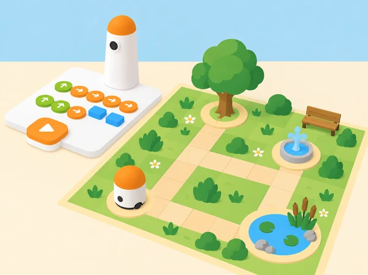

Una ronda d’observació al parc
🏷️ Natura pròxima i sostenibilitat
🌱 Situació, repte i intenció
si s’observa un espai real, l’alumnat mira i registra sense arrancar plantes, tocar animals ni eixir dels recorreguts autoritzats.
🎯 Aprenentatges i vocabulari
llegir una graella, transformar un itinerari en ordres tangibles, anticipar la posició final, depurar una seqüència, comparar rutes i distingir observació directa d’inferència. El robot recorre el mapa; no és un sensor ambiental i no identifica plantes, espècies, qualitat d’aigua ni presència d’animals.
🧰 Materials i preparació
Prepareu el MatataBot i la torre de programació del Coding Set, un mapa original en quadrícula, blocs físics de moviment, targetes amb símbols per a les parades, fitxes d’observació i una figura lleugera per representar el «quadern de camp». Reviseu la càrrega i les instruccions del kit. Si MatataBot recorrerà el mapa, feu caselles de 10 × 10 cm, com indica el fabricant perquè coincidisquen amb el moviment del robot;
comproveu amb una ordre d’avanç que el model s’alinea amb la casella sobre la superfície disponible i registreu qualsevol desviació abans de continuar. Si el mapa és esquemàtic i no està a escala, useu-lo per a planificar o simular, no com a recorregut físic.
Fixeu el mapa sobre una superfície plana, poseu cada destí al centre d’una casella i manteniu les caselles i ordres visibles per a tot el grup. Comenceu amb un recorregut curt, sense obstacles estrets. Si la torre o el robot no està disponible, una fitxa sobre la mateixa graella i targetes de fletxa permeten fer el mateix treball de seqüenciació, però la prova física del robot quedarà pendent.
📅 Seqüència didàctica
Preparem el quadern d’observació (45 min)
Fase 1 · Activem i prediem
Mostreu fotografies pròpies o autoritzades de l’Albufera, d’un parc de l’entorn o d’un mapa fictici. Cada equip tria tres espais que es puguen representar sense manipular éssers vius: ombra i sol, superfície pavimentada, aigua representada en paper, plantes dibuixades o un banc.
Fase 2 · Explorem i construïm
Formuleu una pregunta que es puga respondre mirant, com «on arriba l’ombra?» o «quines formes de fulla veiem en la fotografia?». Eviteu preguntes que requerisquen tocar, capturar o identificar amb certesa una espècie.
Fase 3 · Expliquem i registrem
Assigneu a cada parada un símbol i prepareu una fitxa amb camps «què veig», «què pense que podria significar» i «què no puc saber encara».
Fase 4 · Apliquem i millorem
Ordeneu les tres destinacions en un mapa i acordeu una norma de cura. Comproveu que una altra parella pot entendre la pregunta i trobar cada parada amb els símbols.
Fase 5 · Comprovem i reflexionem
Dissenyem i simulem l’itinerari (45 min)
Fase 1 · Activem i prediem
Situeu MatataBot al punt d’inici de la quadrícula i identifiqueu la direcció cap on mira. Predigueu quin bloc farà girar el robot i on acabarà la primera ruta.
Fase 2 · Explorem i construïm
Abans d’usar la torre, cada parella mou una fitxa casella a casella i registra les ordres físiques necessàries per arribar a la primera parada. Continueu fins a les altres dues, anotant els girs i les visites en l’ordre triat.
Fase 3 · Expliquem i registrem
Comproveu les distàncies en el mapa del centre i anoteu la relació entre cada casella i l’espai representat. No pressuposeu que la quadrícula coincideix amb la longitud del moviment del robot.
Fase 4 · Apliquem i millorem
Compareu dues rutes: una que visita totes les parades i una que n’omet una. Comenteu el nombre d’ordres, la claredat i si el trajecte passa per llocs estrets. Ordeneu els blocs de moviment i una targeta de parada entre trams.
Fase 5 · Comprovem i reflexionem
Programem, provem i depurem amb MatataBot (45 min)
Fase 1 · Activem i prediem
Col·loqueu els blocs físics a la torre seguint la seqüència acordada. Una persona llig les ordres, una altra comprova l’orientació dels blocs i una tercera prediu la ruta.
Fase 2 · Explorem i construïm
Executeu primer un trajecte fins a una sola parada. Si MatataBot acaba en una casella diferent, compareu pas a pas la seqüència esperada i la real: orientació inicial, recompte de moviments, gir i alineació amb la graella.
Fase 3 · Expliquem i registrem
Anoteu la casella d’arribada i l’últim punt en què el robot seguia el pla. Identifiqueu quin bloc o quina condició d’alineació cal revisar.
Fase 4 · Apliquem i millorem
Canvieu una sola instrucció abans de repetir. Quan la primera part funciona, afegiu les altres destinacions i les targetes d’observació, sempre fora del camí del robot.
Fase 5 · Comprovem i reflexionem
En cada parada, trieu la pregunta que investigaria l’equip i anoteu el símbol al quadern.
Fem la ronda i compartim una proposta de cura (45 min)
Fase 1 · Activem i prediem
Abans de l’última ronda, reviseu la ruta i prediu quines preguntes d’observació es podran respondre en cada parada.
Fase 2 · Explorem i construïm
Executeu la ruta completa. En cada parada, una persona llig la pregunta i una altra registra una dada del mapa, una fotografia o una observació real autoritzada. Si treballeu amb maqueta, marqueu les dades com a simulades, no com a observacions de camp.
Fase 3 · Expliquem i registrem
Trieu una proposta de cura del parc que no requerisca instruccions de seguretat inventades, com mantindre’s en un camí autoritzat o no deixar residus. Anoteu quina observació o font la sosté.
Fase 4 · Apliquem i millorem
Intercanvieu mapes entre equips. L’altre grup reconstrueix la ruta i identifica quines observacions són dades i quines són interpretacions. Reviseu el mapa si una parada no s’entén o si la seqüència queda confusa.
Fase 5 · Comprovem i reflexionem
🧪 Evidències i avaluació
Recolliu el mapa, la seqüència inicial i revisada, la predicció de la casella final i les fitxes d’observació. Observeu si l’alumnat:
- situa origen, orientació i destinacions amb referència a la quadrícula;
- ordena blocs per a descriure una ruta i anticipa on acabarà el robot;
- compara el recorregut real amb el previst i troba una instrucció revisable;
- separa observació, inferència i dada simulada;
- explica una pràctica de cura sense atribuir al robot coneixements ambientals.
Una seqüència més llarga no és necessàriament millor: es valora que siga provable, llegible i adequada al mapa. Si el robot falla per alineació, registreu la condició en lloc d’atribuir-ho automàticament a un error de raonament.
♿ Participació, accessibilitat i seguretat
Useu fotografies o pictogrames per preparar l’observació, simplifiqueu el mapa i oferiu rols de cartografia, programació, lectura d’ordres, registre o relat. No és necessari eixir del centre si l’espai no és accessible; la ruta es pot fer completament sobre una maqueta. Feu caselles grans i d’alt contrast, i permeteu dictar o assenyalar les ordres. En qualsevol observació real, seguiu les indicacions del centre i de l’espai natural, manteniu-vos en recorreguts autoritzats i no toqueu animals ni plantes.
🔗 Referents i adaptació
El treball amb destinacions, blocs de moviment, obstacles, memòria de les parades i relat propi s’inspira en l’activitat oficial Delivery Animals del Coding Set, que proposa transportar figures entre llocs comunitaris i explicar per què hi van. Aquesta adaptació canvia completament el mapa i la història: les parades són espais de natura pròxima i cada arribada activa una observació responsable, sense imitar ni reutilitzar les targetes oficials.